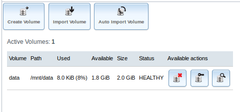

- Módulo: Fundamentos de Hardware
- Título del trabajo FreeNAS
- Componentes del grupo: Ariadna Jiménez Rodríguez
- Curso Académico: 2013/2014
- Fecha de entrega: 12 de Mayo de 2014
Crearemos una máquina virtual que soporte este Sistema operativo, después de configurarla procedemos a instalar el FreeNAS y le añadiremos 2 Discos más de 2GB cada uno.


Desde la máquina virtual de windows7, vamos a realizar unas configuraciones del FreeNAS:
Crearemos un volumen a partir de los 2 discos de 2GB.
Nos vamos a "storage", abrimos volumenes y UFS manager:
Después de hacer eso nos aparece el volumen creado:

Luego activaremos el servicio de carpetas compartidas, ir a "Servicios" -> "Control de Servicios - > CIFS -> ON"
Por último iremos al servidor FreeNAS y entramos a la shell para ejecutar varios comandos:
df -hT:
mkdir /mnt/volumen1/public:
chmod 777 /mnt/volumen1/public (creamos una carpitada para compartir)
Y creamos un recurso compartida CIFS/SMB, ir a "Sharing/Compartido" -> "Añadir recurso CIFS". Path a /mnt/volumen1/public
Ha sido una práctica sencilla, solo tuvimos un problema en el DNS que no nos dejaba abrir el FreeNAS desde la otra máquina virtual.